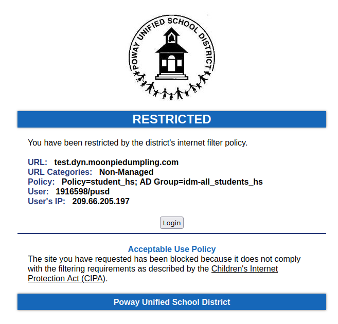
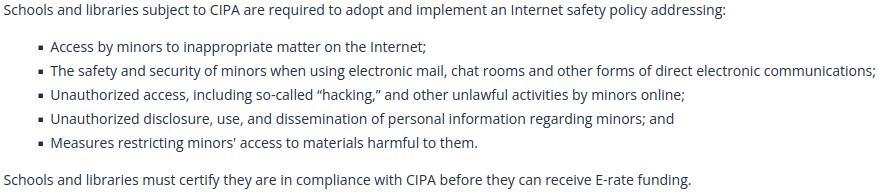

Why schools should be less aggressive with content blocking
I love experimenting with, and managing internet servers. Over the years, I have learned real world skills from my personal projects, as shown by the role I play my the computer science classes here at del norte. I do things, like create guides or fix broken one’s.
But when I try to access my server on school wifi, I get met with the below image.

Not managed. My server is not blocked because it contains dangerous or harmful content, it’s blocked because my school’s (and so many others) uses a whitelist system. A whitelist means that everything is blocked by default, and things must explicitly be allowed through the firewall.
Now I have a way around this. I can use a VPN, or similar software to get around the content filtering restrictions In addition to that, I can simply work on my home wifi, where there are no such restrictions. For me, getting access to my project based learning environments are easy.
But for students, who only use chromebooks, they cannot get around these restrictions. Chromebooks, the managed devices distributed by our school and so many others, are completely locked down. The chromebook itself implements the content blocking software, rather than the WiFi.
This means that, if a student were working at home on a school chromebook that was their only device, they would be denied resources that I have access to, purely because I have my own laptop. Information, research material, learning material, troubleshooting guides, and things like my digital playgrounds are locked away from those students.
It gets worse. Because the restrictions on the chromebooks prevent them from installing software, they cannot install the necessary tools needed for our computer science classes here at Del Norte. And unlike so many other computer based courses at Poway USD, the CompSci class does not provide it’s own computers for use. I personally know someone who wanted to take computer science, but was forced to drop out because they could not obtain their own device.
Obviously, this is unfair. The point of chromebooks is to offer students who are unable to obtain their own device for whatever reason the ability to have a computer to work on so they can be on equal footing with those who can afford their own devices. But what’s the purpose if they don’t actually offer students the ability to participate in the same activities and classes that students with more resources — wealth — have?
Chromebooks should be, at the very least, usable for all classes. But the only just thing is that students with only school provided chromebooks are given access to the exact same resources as those who can afford to buy their own device.
The reason why schools can and do provide chromebooks and other internet services is that they are cheap — Cheaper than they are normally. In America, there exists a program called e-rate, which is designed to make technology more accessible to public institutions, by providing discounts or potentially free products and services. The government subsidizes the cost.
Sadly, this program does not seem to cover computers (see section about internet access), which is probably why schools opt for chromeboks, the cheapest, lowest end device. Although it should be noted, that Google and Apple do have their own deals for offering discounts for bulk purchases for schools and other public institutions.
As great as e-rate is (it’s why the WiFi on school and college campus is so fast, if you know how to utilize it), it comes with caveats and conditions.
The same way the federal government holds funding for certain services over the head of state and local governments, the federal government holds the eligibility for e-rate over the head of schools and libraries. They must meet a certain requirements. One of those conditions is following CIPA, the Children’s Internet Protection Act.
In the beginning of this article, I linked an image of what our school’s block screen looks like. Quoting below:
The site you have requested has been blocked because it does not comply with the filtering requirements as described by the Children’s Internet Protection Act (CIPA).
So, when you click on CIPA, it takes you to the law itself. The law is very short, very vague, and the really important parts can fit comfortably into this article:

Schools must implement a policy addressing these things. It does not say exactly what policies they must implement, or does it define materials harmful to minors, or even define “hacking”.
Because of the way the law is vaguely worded, schools are obligated to implement as aggressively as a content blocking policy as they can, including the complete prevention of installing software on chromebooks. Because the truth of the matter is, if someone can install VSCode (Programming application we use at Del Norte), then they can potentially install censorship circumvention software.
It’s very clear what is happening here. The school cannot meet both obligations, one to prevent students from accessing resources, and another to make resources accessible to students. Becuase not attempting to block everything they can leads to losses on the e-rate discounts, Del Norte breaks it’s promise to it’s students to provide resources to them. Because to this institution, and many more, money is more important than the education of their students.
Now, it’s not like I am personally not doing anything about this. In this blog, I have another post, about creating a system that will let students access. In addition to simply setting this system up, I am optimizing it, to make it cheaper and more accessible to students, especially those with less resources.
Of course, as amazing as what I am deploying is, allowing students to get access to a fully featured linux desktop from their browser, it is also flawed — it also acts as a censorship circumvention software. Inside the system they have access to, users are given unfiltered content. Because of this, there is a possibility that schools would be obligated to block this as well.
Ultimately, my software is cool, equipping at least our computer science class the ability to be done on nothing but chromebooks, it is but a band-aid for the real problem — the laws that force schools further limit access to digital resources for students who already are lacking resources.
It does them little good. Off the top of my head, I know of several different ways to get around these content blocker, even on chromebooks. These blocking measures certainly do have an effect for general purpose use, but against a dedicated student, they are ultimately ineffective.
For some context, CIPA went into effect in 2001. The first iPhone came out in 2005. The law’s intentions are nice, but it pretty clearly wasn’t created with the foreknowledge that every student (who could afford one) would have a device in their pocket capable of circumventing pretty much all of the content blocking restrictions.
Because of this, despite the law being written to “protect” everybody, it only actually affects one group of people. Those who can only rely on school provided devices.
This is a form of institutional oppression of those who are in a lower socioeconomic class. Even though chromebooks are easily capable of installing the necessary software for computer science courses, laws in place force administrators to prevent students from doing so.
This is unjust. The restrictions on these laws should be lessened to enable students who already have a lesser access to such resources an equal access. If parents can be trusted to monitor their kid’s internet usage on a personal device, like a phone or macbook, why can’t they be trusted to do the same with a school chromebook?